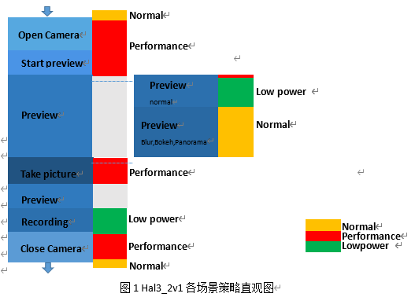

1. 背景
这里camera场景指camera执行的不同阶段，比如open ,preview, take picture. 不同场景对camera性能和功耗要求不一样，比如open时想要快速，必须提频，此时功耗也就高了。如何设置调节策略使得各场景既能达到想要的反应速度，流畅水平，又使得能耗消耗在预期水平？由此引入power hint 机制。
总结一下：性能和功耗平衡需要策略
不同的平台软、硬件配置不一样，性能不同，那么策略也有所不同。这里分为3个等级，分别是performance, normal, low power。
| Power scene | CPU DVFS， | Thermal | DDR DFS |
|---|---|---|---|
| Performance | Generally，at least 4 CPU online & Freq is veryhigh | Disable | Very high/Normal |
| Normal | Default | Enable | Very high/Normal/Low |
| Low power | Some projects have cpu hotplug & Increase the proportion of running low Freq | Enable | Very high//Normal/Low |
- performance：
1）通常，至少4个cpu online，cpu freq很高
2）拔核策略disable
3）ddr dfs为high或者normal - normal：
1）cpu频点默认
2）拔核策略enable
3）ddr dfs：high/normal/low - low power：
1)增加跑低频的概率
2)拔核策略enable
3)ddr dfs：high/normal/low
##1.1 hal3_2v1
对于open camera, close camera, stop preview(flush)，走的都是perforemance等级，ddr dfs走normal即可。
take picture走performance，ddr dfs走high。
recording走low power,ddr dfs也是normal。
普通预览走low power,ddr dfs也是low。
bokeh预览走normal，ddr dfs也是normal。
| Power scene | CPU DVFS， | Thermal | DDR DFS | Camera scene |
|---|---|---|---|---|
| Performance | Generally，at least 4 CPU online & Freq is veryhigh | Disable | normal | Open/close Camera，stop preview (flush) |
| Very High | Take picture | |||
| Normal | Default | Enable | Normal | Preview with Blu /Bokeh/Panorama |
| Low power | Some projects have cpu hotplug /Increase the proportion of running low Freq | Enable | Normal | Recording |
| Low | preview under normal scene |

##1.2 hal3_2v4
| Power scene | CPU DVFS， | DDR DFS | Camera scene |
|---|---|---|---|
| Performance | Generally，at least 4 CPU online & Freq is veryhigh | Normal（as default is Very high） | Open /close Camera， |
| Very high | Take picture | ||
| Normal | Default | Normal （as default is Very high） | NULL |
| Low power | Just Increase the proportion of running low Freq | Very high | Preview / recording |
2. 如何实现？
2.1 怎么选择策略？
各场景根据需要从如下的结构体中选择对应的策略：
1 | typedef enum CAMERA_PERFORMACE_SCENE { |
2.1.1 setCamPreformaceScene
问题来了，谁来选这个策略？
1 | void SprdCameraSystemPerformance::setCamPreformaceScene( |
又有2个问题，通过给函数setCamPreformaceScene传入具体参数camera_scene来选择策略，那么
- 选择策略后，又是如何实现策略实施的呢？
- 谁给setCamPreformaceScene传的这个参数？
2.2 策略如何实施？
在setCamPreformaceScene这个函数体的实现中可以看到，根据不同配置有不同的策略方案。主要是：
- int SprdCameraSystemPerformance::changeDfsPolicy(dfs_policy_t dfs_policy)这个是来选择ddr dfs策略的
- void SprdCameraSystemPerformance::setPowerHint(power_hint_state_type_t powerhint_id)这个是设置power hint的等级的
ddr dfs等级结构体：
1 | typedef enum DFS_POLICY { |
power scene结构体：
1 | typedef enum CURRENT_POWER_HINT { |
现在结构体是不是有点混乱？我们来理一理：
power_hint_state_type_t总共3个档次，对应之前说的NORMAL，PERFORMACE和PERFORMACE这3种策略。从表格中可以看出，不同的camera scene除了要选刚刚3种策略外，还要选中ddr dfs策略（这里dfs_policy_t有4档）。所以，由于cpu dvfs和ddr dfs都要选中，于是sys_performance_camera_scene就配出了多个来，这里是7个。实际代码实现顺序是先传camera_scene这个参数，再去适配cpu dvfs和ddr dfs。
2.2.1 changeDfsPolicy
changeDfsPolicy这个函数是用来实现dfs_policy的选择的，当dfs_policy为CAM_EXIT时，根据当前dfs策略进行releaseDfsPolicy（mCameraDfsPolicyCur），设置完后将mCameraDfsPolicyCur = CAM_EXIT；当dfs_policyCAM_LOW时，setDfsPolicy（CAM_LOW），并且根据当前mCameraDfsPolicyCur来选择releaseDfsPolicy（）。
1 | int SprdCameraSystemPerformance::changeDfsPolicy(dfs_policy_t dfs_policy) { |
2.2.1.1 releaseDfsPolicy
在releaseDfsPolicy（）这个函数里，根据不同的dfs_policy，设置dfs_scene值，并将其写入文件节点exit_scene
1 | int SprdCameraSystemPerformance::releaseDfsPolicy(int dfs_policy) { |
2.2.1.2 setDfsPolicy
在 setDfsPolicy（）这个函数里，根据不同的dfs_policy，设置dfs_scene值，并将其写入文件节点scenario_dfs
1 | int SprdCameraSystemPerformance::setDfsPolicy(int dfs_policy) { |
2.2.2 setPowerHint
setPowerHint函数的实现，首先要考虑和判断当前powerhint策略。例如要设置成CAM_POWER_PERFORMACE_ON，而当前已经是CAM_POWER_PERFORMACE_ON了，就无需多做什么了。若当前策略为CAM_POWER_NORMAL，而目标等级CAM_POWER_PERFORMACE_ON，则
1）acquirePowerHint
2）重新设置mCurrentPowerHint
当前策略不是CAM_POWER_NORMAL时，而策略有变化时，需要先releasePowerHint当前策略，再获取策略，置状态。
1 | void SprdCameraSystemPerformance::setPowerHint( |
2.2.2.1acquirePowerHint
acquirePowerHint主要由acquire()实现。
1 |
|
2.2.2.2 releasePowerHint
releasePowerHint主要由release()实现。
1 | void SprdCameraSystemPerformance::releasePowerHint( |
谁来选择策略？
我们来看看哪些地方调用了setCamPreformaceScene：
关闭相机的时候
1
2
3int SprdCamera3HWI::closeCamera() {
mOEMIf->setCamPreformaceScene(CAM_PERFORMANCE_LEVEL_6);
}切换
1
2
3
4
5
6int SprdCamera3HWI::flush() {
if (mOEMIf) {
mOEMIf->setFlushFlag(1);
mOEMIf->setCamPreformaceScene(CAM_PERFORMANCE_LEVEL_6);
}
}1
2
3
4int SprdCamera3OEMIf::start(camera_channel_type_t channel_type,
uint32_t frame_number) {
setCamPreformaceScene(CAM_PERFORMANCE_LEVEL_6);
}自动对焦
1
2
3
4
5
6
7
status_t SprdCamera3OEMIf::autoFocus() {
if (mSysPerformace) {
mGetLastPowerHint = mSysPerformace->mCurrentPowerHintScene;
setCamPreformaceScene(CAM_PERFORMANCE_LEVEL_6);
}
}接收预览帧时，根据预览流，当时的模式选择不同的档次
1
2
3
4
5
6
7
8
9
10
11
12
13
14
15
16
17
18
19
20
21
22
23void SprdCamera3OEMIf::receivePreviewFrame(struct camera_frame_type *frame) {
if (pre_stream) {
if (!isCapturing() && mIsPowerhintWait && !mIsAutoFocus) {
if ((frame_num > mStartFrameNum) &&(frame_num - mStartFrameNum > CAM_POWERHINT_WAIT_COUNT)) {
if (getMultiCameraMode() == MODE_BLUR ||
getMultiCameraMode() == MODE_BOKEH ||
mSprdAppmodeId == CAMERA_MODE_PANORAMA ||
mSprdAppmodeId == CAMERA_MODE_3DNR_PHOTO ||
mSprdAppmodeId == CAMERA_MODE_FILTER ||
mSprdAppmodeId == -1 ||
(mRecordingMode && !mVideoWidth && !mVideoHeight)){
setCamPreformaceScene(CAM_PERFORMANCE_LEVEL_4);
} else if (mSprdAppmodeId == CAMERA_MODE_CONTINUE ||
sprddefInfo->slowmotion > 1) {
setCamPreformaceScene(CAM_PERFORMANCE_LEVEL_6);//
} else if (mRecordingMode == true) {
setCamPreformaceScene(CAM_PERFORMANCE_LEVEL_3);//录像模式
} else if (getMultiCameraMode() != MODE_SINGLE_FACEID_UNLOCK) {
setCamPreformaceScene(CAM_PERFORMANCE_LEVEL_1);
}
mIsPowerhintWait = 0;
}
}接收jpeg图片时
1
2
3
4
5
6
7
8
9
10
11
12
13void SprdCamera3OEMIf::receiveJpegPicture(struct camera_frame_type *frame) {
if (getMultiCameraMode() == MODE_BLUR ||
getMultiCameraMode() == MODE_BOKEH ||
mSprdAppmodeId == CAMERA_MODE_3DNR_PHOTO) {
setCamPreformaceScene(CAM_PERFORMANCE_LEVEL_4);
} else if (mRecordingMode == true) {
setCamPreformaceScene(CAM_PERFORMANCE_LEVEL_3);
} else if (mSprdAppmodeId == CAMERA_MODE_CONTINUE) {
setCamPreformaceScene(CAM_PERFORMANCE_LEVEL_6);
} else {
setCamPreformaceScene(CAM_PERFORMANCE_LEVEL_1);
}
}1
2
3
4
5
6
7
8
9
10
11
12
13
14
15void SprdCamera3OEMIf::HandleFocus(enum camera_cb_type cb, void *parm4) {
switch (cb) {
case CAMERA_EXIT_CB_DONE:
HAL_LOGV("camera cb: autofocus succeeded.");
{
if (mIsAutoFocus) {
setCamPreformaceScene(mGetLastPowerHint);
}
}
case CAMERA_EXIT_CB_FAILED: {
if (mIsAutoFocus) {
setCamPreformaceScene(mGetLastPowerHint);
}
}
}1
2
3
4
5
6
7
8
9
10
11
12
13
14
15
16
17
18
19
20
21
22
23
24
25
26
27
28
29
30
31
32
33
34
35
36
37
38
39SprdCamera3OEMIf::SprdCamera3OEMIf(int cameraId, SprdCamera3Setting *setting)
: mSetCapRatioFlag(false), mVideoCopyFromPreviewFlag(false),
mSprdPipVivEnabled(0), mSprdHighIsoEnabled(0), mSprdFullscanEnabled(0),
mSprdRefocusEnabled(0), mSprd3dCalibrationEnabled(0), mSprdYuvCallBack(0),
mSprdMultiYuvCallBack(0), mSprdReprocessing(0), mNeededTimestamp(0),
mIsUnpopped(false), mIsBlur2Zsl(false),
mPreviewFormat(CAM_IMG_FMT_YUV420_NV21),
mVideoFormat(CAM_IMG_FMT_YUV420_NV21),
mCallbackFormat(CAM_IMG_FMT_YUV420_NV21),
mPictureFormat(CAM_IMG_FMT_YUV420_NV21),
mRawFormat(CAM_IMG_FMT_BAYER_MIPI_RAW), mPreviewStartFlag(0),
mIsDvPreview(0), mIsStoppingPreview(0), mRecordingMode(0),
mIsSetCaptureMode(false), mRecordingFirstFrameTime(0), mUser(0),
mPreviewWindow(NULL), mHalOem(NULL), mIsStoreMetaData(false),
mIsFreqChanged(false), mCameraId(cameraId), miSPreviewFirstFrame(1),
mCaptureMode(CAMERA_NORMAL_MODE), mCaptureRawMode(0), mFlashMask(false),
mReleaseFLag(false), mTimeCoeff(1), mIsPerformanceTestable(false),
mIsAndroidZSL(false), mSetting(setting), BurstCapCnt(0), mCapIntent(0),
mPrvTimerID(NULL), mFlashMode(-1), mIsAutoFocus(false),
mIspToolStart(false), mSubRawHeapNum(0), mGraphicBufNum(0), mEisGraphicBufNum(0),
mSubRawHeapSize(0), mPathRawHeapNum(0), mPathRawHeapSize(0),
mPreviewDcamAllocBufferCnt(0), mIsRecording(false),
mZSLModeMonitorMsgQueHandle(0), mZSLModeMonitorInited(0), mCNRMode(0),
mGyroInit(0), mGyroExit(0), mEisPreviewInit(false), mEisVideoInit(false),
mGyroNum(0), mSprdEisEnabled(false), mVideoSnapshotType(0),
mIommuEnabled(false), mFlashCaptureFlag(0),
mFlashCaptureSkipNum(FLASH_CAPTURE_SKIP_FRAME_NUM), mFixedFpsEnabled(0),
mSprdAppmodeId(-1), mTempStates(CAMERA_NORMAL_TEMP), mIsTempChanged(0),
mFlagOffLineZslStart(0), mZslSnapshotTime(0), mIsIspToolMode(0),
mIsUltraWideMode(false), mIsRawCapture(0), mIsCameraClearQBuf(0),
mLatestFocusDoneTime(0), mFaceDetectStartedFlag(0),
mIsJpegWithBigSizePreview(0)
{
SprdCameraSystemPerformance::getSysPerformance(&mSysPerformace);
if (mSysPerformace) {
setCamPreformaceScene(CAM_PERFORMANCE_LEVEL_6);
}
}